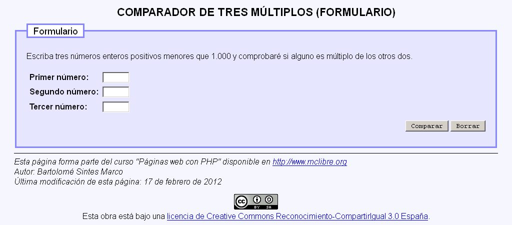
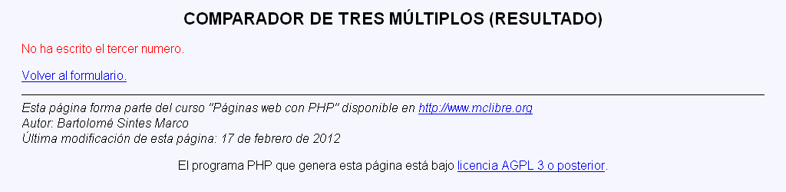
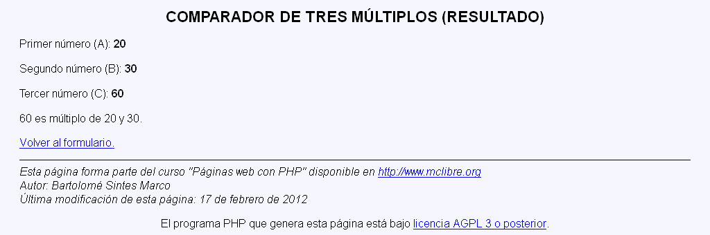

Exámenes - Compara tres múltiplos
En este examen se debe crear un programa que admita tres valores numéricos y que compruebe algunos son múltiplos de los otros dos
El programa tendrá dos páginas:
- La primera pide los valores.
- La segunda escribe la respuesta
Compara tres múltiplos - Comentarios
- Los casos particulares a considerar (en el orden adecuado) son:
- si uno, dos o tres de los números son cero
- si dos números son iguales y múltiplos del tercero (o el tercero de los otros dos)
- si los tres números son iguales
Compara tres múltiplos - Capturas
Algunas capturas:



